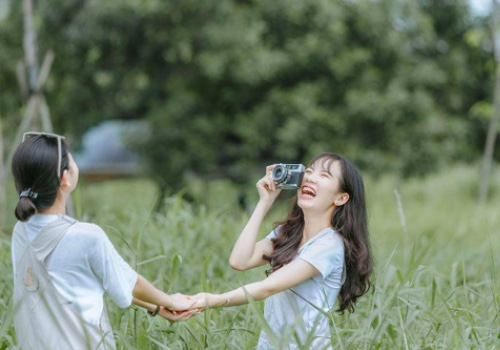

First, pick the color that best describes you.
Next, which McDonald's dipping sauce would you rather get?
You finally finish all that work you had to do. Now you...


You’re feeling kind of hungry and you see a fruit bowl next to you, what do you reach for?